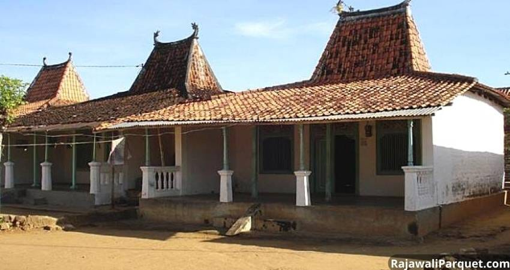
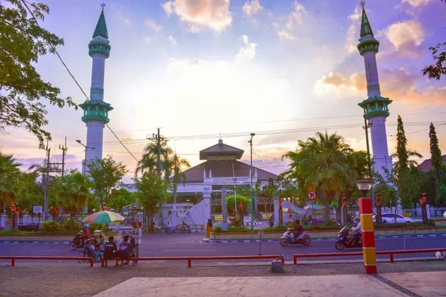

Karapan Sapi 🐂

Karapan Sapi adalah perlombaan pacuan sapi yang sangat populer dan merupakan ikon kebudayaan Madura. Dua ekor sapi yang ditarik oleh seorang joki (disebut tukang tongko' atau sape gubeng) berlari kencang memperebutkan hadiah bergengsi. Acara ini diadakan setiap tahun pada bulan Agustus atau September, dengan Grand Final memperebutkan Piala Presiden/Gubernur.

Fakta: Sebelum Karapan dimulai, sering diadakan ritual upacara yang disebut Malem Tator atau Upacara Ngator, untuk keselamatan dan keberkahan.
Batik Madura 🎨

Batik Madura dikenal dengan warna-warna yang cerah, berani, dan motif yang khas, seringkali menggunakan motif alam seperti flora dan fauna laut, serta motif yang berhubungan dengan Karapan Sapi. Pewarnaan alami seperti penggunaan daun dan kulit kayu juga masih banyak dipraktikkan, menghasilkan warna yang tahan lama dan unik.
Fakta: Salah satu motif batik Madura yang terkenal adalah Patan-Patan (garis-garis geometris) dan motif Lasem yang dipengaruhi oleh budaya Tionghoa.
Bahasa Madura 🗣️
Bahasa Madura adalah bahasa yang memiliki penutur terbanyak kedua di Jawa Timur setelah bahasa Jawa. Bahasa ini dikenal memiliki tiga tingkatan penggunaan atau undha-usuk basa (mirip dengan Jawa), yaitu: Enja'-Iya, Engghi-Enten, dan Engghi-Bhunten. Penggunaan tingkatan bahasa menunjukkan rasa hormat kepada lawan bicara.
- Enja'-Iya (Kasual/Ngoko): Untuk teman sebaya atau orang yang lebih muda.
- Engghi-Enten (Madya/Sedang): Untuk percakapan sehari-hari yang lebih sopan.
- Engghi-Bhunten (Kromo/Halus): Untuk menghormati orang yang lebih tua atau berkedudukan tinggi.

Fakta: Salah satu ciri khas Bahasa Madura adalah tekanan suara yang kuat dan konsonan retrofleks (bunyi 't' dan 'd' yang diucapkan dengan ujung lidah ditarik ke belakang).
Makanan & Minuman Khas 🍜
Sate Madura (Makanan Khas)

Sate Madura tidak hanya sekadar sate, ini adalah ikon kuliner Madura yang sangat terkenal. Kunci keunikan Sate Madura terletak pada racikan bumbu kacangnya yang kental, manis, dan gurih yang dimasak bersama dengan kecap manis dan air jeruk nipis. Daging ayam atau kambing yang digunakan biasanya melalui proses marinasi khusus agar teksturnya empuk dan rasanya meresap sempurna. Sate ini wajib disajikan dengan taburan bawang merah mentah cincang dan lontong atau nasi hangat. Saking populernya, Sate Madura dapat ditemukan hampir di seluruh penjuru Indonesia, dibawa oleh para perantau Madura.

Fakta: Sebelum dibakar, potongan daging sate sering dicelupkan sebentar ke dalam bumbu kacang yang sudah dicairkan. Ini yang membedakannya dengan sate dari daerah lain.
Es Cao (Minuman Khas)

Es Cao adalah minuman penyegar tradisional yang sangat dicari saat cuaca panas. Minuman ini utamanya terbuat dari cincau hitam alami yang dipotong-potong, lalu disiram dengan campuran santan kental, gula merah cair (sirup), dan es batu. Cincau hitam memberikan tekstur kenyal yang unik dan rasa yang netral, sementara perpaduan santan dan gula merah menciptakan rasa manis legit yang khas dan sangat memuaskan dahaga.

Fakta: Ada juga penjual yang menambahkan nangka, tape, atau sirup merah untuk menambah aroma dan warna. Es Cao Madura sangat populer di pasar tradisional, warung makan, hingga penjual kaki lima, terutama saat bulan Ramadan sebagai menu takjil favorit.
Senjata Tradisional & Baju Adat 🗡️
Celurit (Senjata Tradisional)

Celurit adalah senjata tajam Madura yang paling ikonik, mudah dikenali dari bentuknya yang melengkung seperti bulan sabit. Secara historis, Celurit adalah alat pertanian yang digunakan untuk memotong rumput, namun dalam konteks budaya, ia berevolusi menjadi simbol keberanian, kejantanan, dan kehormatan (carok). Celurit selalu dibawa oleh pria Madura dan dianggap sebagai bagian tak terpisahkan dari identitas mereka.

Fakta: Filosofi bentuk Celurit yang melengkung menyerupai tanda tanya ( ? ) sering dimaknai sebagai "selalu mempertanyakan keadilan Tuhan dan keadilan di dunia".
Pesa'an dan Sakera (Baju Adat Pria dan Wanita)

Pakaian Adat pria dikenal sebagai Baju Pesa'an atau Baju Sakera. Pakaian ini sangat mencolok dan penuh makna: terdiri dari kaus bergaris merah-putih (melambangkan sifat jujur, terbuka, dan berani), celana gombrong hitam (melambangkan kesatriaan), sabuk kain yang dipakai di pinggang untuk memperkuat celana gombrong, dan Odheng (ikat kepala) yang menunjukkan status sosial. Sementara itu, pakaian adat wanita Madura disebut Kebaya Marlena yang dipadukan dengan sarung batik Madura yang penuh warna cerah budaya (samper), serta perhiasan emas yang banyak, melambangkan kekayaan budaya dan kemakmuran.

Fakta: Celana gombrong (longgar) yang digunakan pada Baju Sakera memungkinkan kebebasan bergerak, menunjukkan karakter orang Madura yang dinamis.
Rumah Adat: Tanean Lanjheng 🏠
Rumah adat Madura dikenal dengan nama Tanean Lanjheng yang secara harfiah berarti "halaman panjang". Tanean Lanjheng bukanlah sekadar satu rumah, melainkan sebuah kompleks pemukiman yang memanjang dan ditempati oleh beberapa keluarga yang masih satu keturunan. Susunan bangunan di kompleks ini sangat teratur: dimulai dari kandang ternak di bagian paling utara, lalu rumah-rumah tinggal (umumnya menghadap Selatan), dan diakhiri dengan langgar atau mushola di bagian paling selatan. Filosofi Tanean Lanjheng menekankan pada nilai kekeluargaan yang kuat, gotong royong, dan keselarasan antara manusia, alam, dan Tuhan.
Fakta: Rumah adat madura memiliki dua versi modern, dan tradisional.
Peninggalan Sejarah 🏰
Madura menyimpan banyak jejak sejarah dari masa kerajaan hingga kolonial. Salah satu peninggalan paling penting adalah:
Masjid Agung Bangkalan
Masjid Agung Bangkalan, atau yang sering disebut Masjid Jamik Bangkalan, merupakan salah satu peninggalan sejarah paling penting dan ikonik di Madura. Masjid ini diperkirakan dibangun pada abad ke-15, pada masa berkembangnya dakwah Islam di Madura. Keistimewaan masjid ini terlihat dari arsitekturnya yang memadukan unsur budaya Jawa, Madura, dan Arab, mencerminkan proses akulturasi ketika Islam mulai diterima oleh masyarakat setempat. Bagian yang paling mencolok adalah gerbang candi bentar di depan masjid. Bentuk gerbang ini mirip dengan arsitektur Kerajaan Majapahit yang berciri khas Hindu-Buddha, menunjukkan bahwa masyarakat masa itu tidak serta-merta meninggalkan budaya lama, tetapi menggabungkannya dengan ajaran Islam. Inilah yang membuat Masjid Agung Bangkalan menjadi simbol harmoni budaya.

Fakta: Masjid Agung Bangkalan menjadi pusat kegiatan keagamaan dan simbol sejarah Islam di Bangkalan.